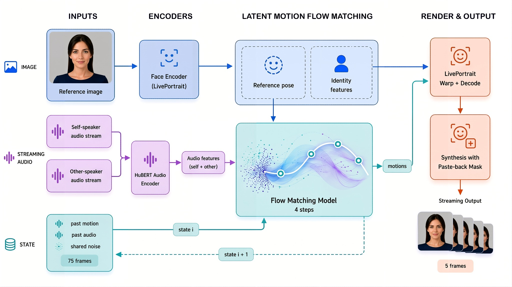

Avatars that listen back.
A real-time conversational avatar from a single photo — ultra-realistic, emotional, just like a real human on a call.
Avaturn · 2026 · * Equal contribution
A summary of what AVTR-1 does and why it matters.
AVTR-1 is a real-time conversational talking-head model that animates a single reference photo from speech. Unlike prior portrait-animation systems that treat the avatar as a passive listener when not speaking, AVTR-1 jointly models speaking and listening behavior — it hears both sides of the call.
The system combines a Latent Motion Flow Matching (LMFM) module with a portrait-warping renderer. Motion is generated in a compact latent space at 25 fps using continuous flow matching with an Euler ODE solver; rendering is offloaded to a LivePortrait-style warping pipeline that preserves identity and produces 512×512 video at interactive latency. AVTR-1 powers avaturn.live, our production real-time-call avatar product.
AVTR-1 is evaluated on the Seamless Interaction corpus across identity preservation, lip-sync, perceptual quality, and listener-side co-articulation axes. The model is small enough to run on a single consumer GPU at the target frame rate.
A single reference photo + dyadic audio → an animated conversational
avatar.
Three dyadic
Seamless Interaction calls below.
Real-time streaming pipeline from dyadic audio + reference photo to animated avatar video. Identity features from the photo are extracted once per avatar; for every incoming audio chunk, the full Hubert → LMFM → renderer chain runs end-to-end and emits the next frames at 25 fps.

AVTR-1 generates motion in 5-frame chunks end-to-end. At 25 fps that's 200 ms of output per chunk, so any GPU under that line runs in real-time.
| GPU | Latency | Real-time |
|---|---|---|
| L40 | 84 ms | 2.4× |
| A100 | 91 ms | 2.2× |
| RTX 4060 Ti | 166 ms | 1.2× |
| RTX 3070 | 181 ms | 1.1× |
| L4 | 202 ms | 0.99× |
| RTX 3060 Ti | 206 ms | 0.97× |
| RTX 4060 | 232 ms | 0.86× |
Real-time factor = 200 ms / latency. ≥ 1.0× means the GPU keeps up with 25 fps.
Conventional talking-head models only condition on the speaker's own audio. As a result, when the speaker stops talking, the avatar lapses into a neutral idle loop — which immediately breaks immersion in a conversation. AVTR-1 conditions on both audio streams via a gated fusion: when the avatar is speaking, its own audio drives lip articulation; when the user is speaking, the user's audio drives the avatar's nodding, brow movement, and gaze. The split is learned, not hand-engineered.
AVTR-1 against open-source talking-head systems we deployed and evaluated end-to-end on Seamless Interaction. All numbers were computed by us under the same protocol; the headline scores shown on each card are reproduced from the full metric panel below.
★ = native dyadic audio conditioning. AVTR-1 and DyStream take both the speaker's audio and the partner's audio as input. SoulX-FlashHead Pro / Lite, FLOAT, and Ditto only condition on the speaker's own audio — on listener frames they fall back to a learned idle prior. The gap shows up most clearly on the CJFD-family metrics and TLCC-Proactivity.
Own-models panel on 186 speaker–listener pairs from 93 dyadic conversations of Seamless Interaction (~12 h of dialogue). ↑ higher is better · ↓ lower is better.
| Metric | Encoder | ↑/↓ | AVTR-1 ★ | SoulX Pro | SoulX Lite | FLOAT | Ditto | DyStream ★ |
|---|---|---|---|---|---|---|---|---|
| TLCC-Proactivity | EMOCA | ↑ | 0.010 | 0.001 | 0.004 | 0.004 | 0.000 | 0.001 |
| TLCC-Proactivity | LP | ↑ | 0.001 | -0.005 | -0.001 | -0.000 | -0.005 | -0.003 |
| CJFD specificity | ↑ | 0.993 | 0.936 | 0.858 | 0.885 | 0.882 | 0.853 | |
| CJFD marginal_fit | ↑ | 0.627 | 0.612 | 0.626 | 0.599 | 0.625 | 0.610 | |
| CJFD FMD gain | ↑ | 0.720 | 0.701 | 0.721 | 0.722 | 0.669 | 0.691 | |
| FMD cos_mean | ↓ | 0.175 | 0.206 | 0.176 | 0.181 | 0.212 | 0.192 | |
| CJFD quality (composite) | ↑ | 0.765 | 0.738 | 0.729 | 0.726 | 0.718 | 0.711 |
AVTR-1 column highlighted.
A talking-head model can score perfectly on every standard benchmark and still feel completely dead on a real call. CJFD quality is the score we built to catch that — and it's the one number on the page that correlates with how the product feels.
On a real video call the user is talking half the time, and the avatar should be listening — nodding, looking at the camera, leaning in. Most standard benchmarks (FID, FVD, PFD, SyncNet, rPCC) don't measure that at all; they only check whether the avatar's face looks natural in isolation. So an idle-loop scores nearly as well as a real human while feeling obviously wrong the moment a user tries it.
CJFD asks a different question: is the avatar reacting to this specific person on the other end of the call, or to anyone in general?
TLCC-Proactivity in the table above is the only older metric that even tries to capture this — it correlates the listener's face with the speaker's face (motion features) and reports whether the model overshoots GT-level coupling. It's a decent proxy, but it uses the speaker's face as the reference signal. In a real call the avatar doesn't see the partner's face, it hears the partner's voice — so face↔face coupling is the wrong signal: it tells you whether two video tracks co-move, not whether the avatar responds to what's being said.
CJFD is the first metric in this set that brings the partner's audio into the evaluation and scores the avatar's face jointly with it. That's the same signal the avatar actually receives in production. Once the audio is part of the score, we can run two pairings and watch what happens:
A reactive model scores much worse with the wrong audio. An idle-loop scores the same either way. The gap is what CJFD measures — across three independent components (the CJFD marginal_fit, CJFD specificity, and CJFD FMD gain rows in the table), then combined with a geometric mean into CJFD quality (composite) so a model has to pass all three at once. FMD cos_mean is the raw frame-level cosine distance behind FMD gain, useful when you want to inspect the point-wise signal directly. Hover any row for the exact formula.
On Seamless Interaction, AVTR-1 scores CJFD quality = 0.765 — the only model in the comparison where all three components are high simultaneously. Every other system lands between 0.71 and 0.73. The spread between models on CJFD quality is the spread users feel on a real call.
If AVTR-1 is useful in your work, please cite us.
@misc{avtr1_2026,
title = {AVTR-1},
author = {Tikhonova, Anastasia and Kravtsov, Artem and Ziganshin, Dmitrii
and Burkov, Egor and Balitskiy, Gleb and Sherman, Sergei
and Lebedev, Vadim and Poletaev, Vsevolod},
year = {2026},
url = {https://avaturn.live}
}